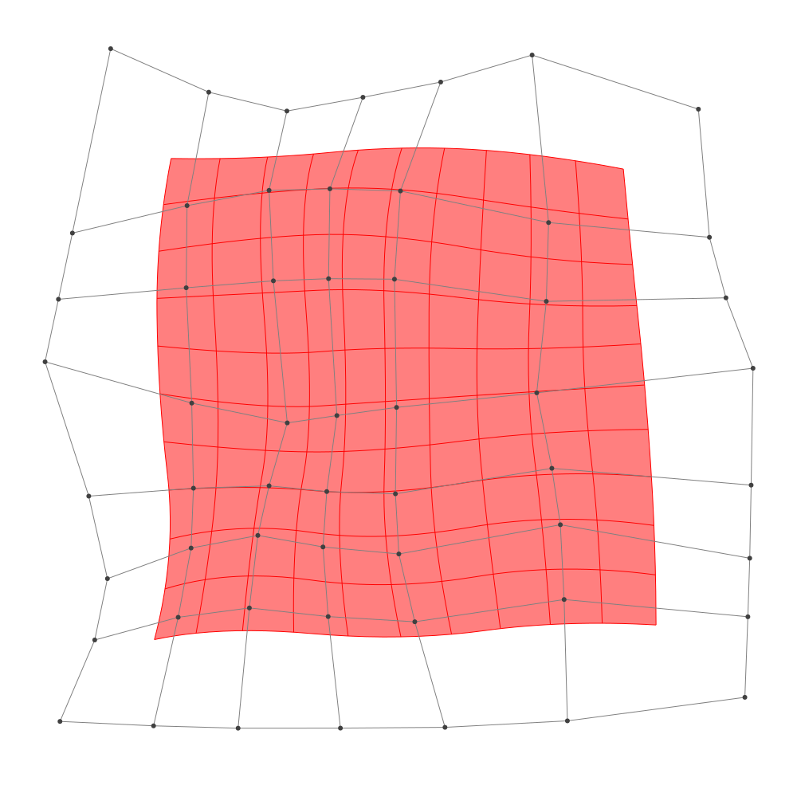
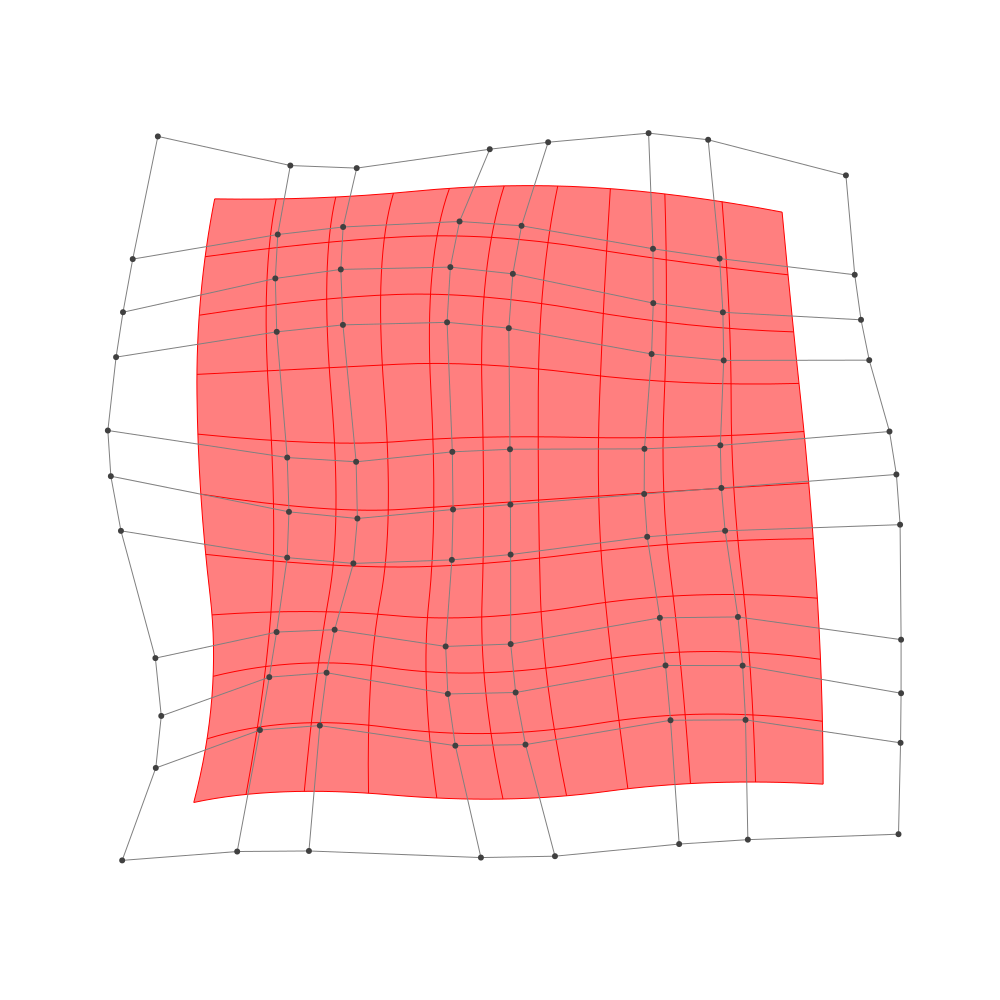

Refinement
BasicBSpline.refinement — FunctionRefinement of B-spline manifold with given B-spline spaces.
julia> p = 2 # degree of polynomial2julia> k = KnotVector(1:8) # knot vectorKnotVector([1.0, 2.0, 3.0, 4.0, 5.0, 6.0, 7.0, 8.0])julia> P = BSplineSpace{p}(k) # B-spline spaceBSplineSpace{2, Float64}(KnotVector([1.0, 2.0, 3.0, 4.0, 5.0, 6.0, 7.0, 8.0]))julia> rand_a = [SVector(rand(), rand()) for i in 1:dim(P), j in 1:dim(P)]5×5 Matrix{StaticArrays.SVector{2, Float64}}: [0.252585, 0.448261] [0.979271, 0.151461] … [0.888531, 0.889182] [0.0592109, 0.3631] [0.459709, 0.938324] [0.781775, 0.0494283] [0.912783, 0.365125] [0.218604, 0.535629] [0.902049, 0.432783] [0.619175, 0.45542] [0.550587, 0.992926] [0.176325, 0.80953] [0.845944, 0.750768] [0.908906, 0.435309] [0.26292, 0.130318]julia> a = [SVector(2*i-6.5, 2*j-6.5) for i in 1:dim(P), j in 1:dim(P)] + rand_a # random5×5 Matrix{StaticArrays.SVector{2, Float64}}: [-4.24741, -4.05174] [-3.52073, -2.34854] … [-3.61147, 4.38918] [-2.44079, -4.1369] [-2.04029, -1.56168] [-1.71822, 3.54943] [0.412783, -4.13487] [-0.281396, -1.96437] [0.402049, 3.93278] [2.11918, -4.04458] [2.05059, -1.50707] [1.67633, 4.30953] [4.34594, -3.74923] [4.40891, -2.06469] [3.76292, 3.63032]julia> M = BSplineManifold(a,(P,P)) # Define B-spline manifoldBSplineManifold{2, (2, 2), StaticArrays.SVector{2, Float64}, Tuple{BSplineSpace{2, Float64}, BSplineSpace{2, Float64}}}((BSplineSpace{2, Float64}(KnotVector([1.0, 2.0, 3.0, 4.0, 5.0, 6.0, 7.0, 8.0])), BSplineSpace{2, Float64}(KnotVector([1.0, 2.0, 3.0, 4.0, 5.0, 6.0, 7.0, 8.0]))), StaticArrays.SVector{2, Float64}[[-4.247414856359526, -4.051738990678695] [-3.520728618430913, -2.3485394607664896] … [-4.17640477637286, 1.6672924011370513] [-3.6114686550445416, 4.389182279833044]; [-2.4407891162752957, -4.136899723784964] [-2.040290682028348, -1.561675944449704] … [-1.9069317031612854, 2.4387539064413497] [-1.7182246136233317, 3.549428290544304]; … ; [2.1191754973854873, -4.044580267341869] [2.0505873076440864, -1.507074443096827] … [1.9192818338186846, 1.8364722157531084] [1.6763253238240574, 4.309529801031648]; [4.34594351368229, -3.7492321908193573] [4.408905710365778, -2.0646905860421327] … [3.925584703824094, 1.7389346205304732] [3.762919731106159, 3.630318255572136]])
h-refinemnet
Insert additional knots to knot vector.
julia> k₊=(KnotVector(3.3,4.2),KnotVector(3.8,3.2,5.3)) # additional knotvectors(KnotVector([3.3, 4.2]), KnotVector([3.2, 3.8, 5.3]))julia> M_h = refinement(M,k₊=k₊) # refinement of B-spline manifoldBSplineManifold{2, (2, 2), StaticArrays.SVector{2, Float64}, Tuple{BSplineSpace{2, Float64}, BSplineSpace{2, Float64}}}((BSplineSpace{2, Float64}(KnotVector([1.0, 2.0, 3.0, 3.3, 4.0, 4.2, 5.0, 6.0, 7.0, 8.0])), BSplineSpace{2, Float64}(KnotVector([1.0, 2.0, 3.0, 3.2, 3.8, 4.0, 5.0, 5.3, 6.0, 7.0, 8.0]))), StaticArrays.SVector{2, Float64}[[-4.247414856359526, -4.051738990678695] [-3.811403113602358, -3.0298192727313715] … [-4.091664358173612, 2.07557588294145] [-3.6114686550445416, 4.389182279833044]; [-3.0731081253047767, -4.10709346719777] [-2.764309625983458, -2.7450842919754552] … [-2.6531891911856493, 2.4199323506664228] [-2.3808600281207553, 3.843342186795363]; … ; [2.1191754973854873, -4.044580267341869] [2.0780225835406467, -2.522076772794844] … [1.8828383573194905, 2.207430853544889] [1.6763253238240574, 4.309529801031648]; [4.34594351368229, -3.7492321908193573] [4.383720831692383, -2.7385072279530225] … [3.9011849579164037, 2.0226421657867224] [3.762919731106159, 3.630318255572136]])julia> save_png("2dim_h-refinement.png", M_h) # save image

Note that this shape and the last shape are identical.
p-refinemnet
Increase the polynomial degree of B-spline manifold.
julia> p₊=(1,2) # additional degrees(1, 2)julia> M_p = refinement(M,p₊=p₊) # refinement of B-spline manifoldBSplineManifold{2, (3, 4), StaticArrays.SVector{2, Float64}, Tuple{BSplineSpace{3, Float64}, BSplineSpace{4, Float64}}}((BSplineSpace{3, Float64}(KnotVector([1.0, 2.0, 3.0, 3.0, 4.0, 4.0, 5.0, 5.0, 6.0, 6.0, 7.0, 8.0])), BSplineSpace{4, Float64}(KnotVector([1.0, 2.0, 3.0, 3.0, 3.0, 4.0, 4.0, 4.0, 5.0, 5.0, 5.0, 6.0, 6.0, 6.0, 7.0, 8.0]))), StaticArrays.SVector{2, Float64}[[-3.778230165350073, -3.6037982199923952] [-3.4420693633592356, -2.67952976758437] … [-3.672601443496783, 2.4092078094203893] [-3.4214858021484873, 3.6358847908856324]; [-2.6281776392408625, -3.515234667159399] [-2.4007461051439147, -2.300291464943689] … [-2.222324233320794, 2.654979563857748] [-2.096618269235954, 3.344584713791979]; … ; [2.4786377187673088, -3.3965193076713502] [2.455306156098681, -2.198846747171146] … [2.196271998707458, 2.414243931609101] [2.081484705149869, 3.602299895061964]; [3.985074794035993, -3.3417812932343116] [4.00559336017566, -2.42843013922338] … [3.5471891682571797, 2.2522732097545317] [3.459165720458488, 3.2464378564617693]])julia> save_png("2dim_p-refinement.png", M_p) # save image

Note that this shape and the last shape are identical.